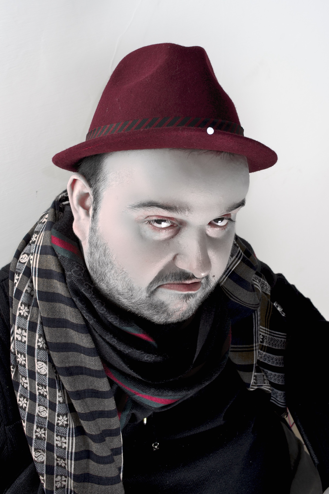
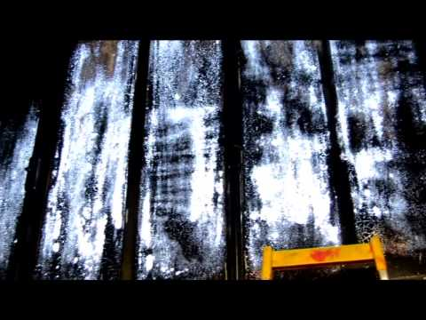

Giampiero Pagnini è un artista visivo di Pescara. Dai primi anni Duemila la sua ricerca ruota attorno a un unico centro di gravità: la luce — fotografata, costruita, scolpita, installata. «Sensibile alla luce», come la pellicola: è la definizione che meglio descrive sia il suo materiale di lavoro, sia il suo modo di stare al mondo.
Il suo lavoro comincia prima dello scatto. Pagnini progetta e costruisce da sé i propri strumenti ottici: camere stenopeiche in plexiglass con fori praticati al laser, a uno o a quattro occhi simultanei; ottiche anamorfiche ricavate da tubi in PVC; Polaroid convertite al foro stenopeico; box camera di inizio Novecento restaurate e riverniciate in colori pop. La macchina fotografica smette di essere un mezzo e diventa opera essa stessa — e quasi ogni serie nasce dallo strumento inventato apposta per realizzarla: la camera FOUR EYES genera le visioni quadruple di Disappearing, il tubo anamorfico CHEAT PIN piega le architetture di Cheat Your Eyes.
La pellicola istantanea è la sua materia scultorea. L'emulsione Polaroid viene sollevata, trasferita e adagiata su sfere opaline, annegata in blocchi di plexiglass, finita in resina epossidica; le dominanti impreviste delle pellicole scadute diventano tavolozza. Il tempo della posa lunga è un altro dei suoi materiali: nei ritratti di Red Chairs la luce si accumula fino a disegnare un'aureola attorno a persone comuni sedute su una poltrona rossa, troni provvisori per santi di quartiere.
La luce è anche costruita fisicamente: lightbox, pannelli elettroluminescenti, neon di Wood, polveri UV, LED ad alta potenza. Da Cutting Light ad Aperitivo Stenopeico Light, l'immagine non viene illuminata: si accende. Nelle installazioni la camera oscura si ribalta e diventa abitabile — in Esperienze Stenopeiche lo spettatore cammina dentro costellazioni di punti LED, in un gioco che è insieme infanzia e ottica.
Il filo che tiene insieme tutto è l'inganno felice della percezione: anamorfosi, moltiplicazioni caleidoscopiche, quattro punti di vista simultanei sulla stessa scena. Le immagini chiedono di non fidarsi degli occhi — e di godersi il tradimento.
Il suo lavoro è stato esposto, tra gli altri, all'Arsenale di Venezia (Ambient art&architecture, 2010), a Torino (Arte in luce, 2009), a Vienna (Made in Italy II, 2008), a Roma, Catania e al Palazzo Ducale di Urbino (2013), fino al festival Oodaaq di Rennes (2013). Nel 2011 l'Università «G. d'Annunzio» di Chieti-Pescara — Cattedra di Psicologia Clinica, prof. Mario Fulcheri — gli ha dedicato il documentario Sensibili alla luce, un dialogo tra la sua ricerca artistica e la psicologia della percezione.
Giampiero Pagnini is a visual artist based in Pescara, Italy. Since the early 2000s his research has revolved around a single centre of gravity: light — photographed, built, sculpted, installed. "Sensitive to light", like film itself: the definition that best describes both his working material and his way of being in the world.
His work begins before the shutter. Pagnini designs and builds his own optical instruments: laser-drilled plexiglass pinhole cameras, with one or four simultaneous eyes; anamorphic optics made from PVC pipes; Polaroids converted to pinholes; early-twentieth-century box cameras restored and repainted in pop colours. The camera stops being a tool and becomes a work in itself — and almost every series is born from the instrument invented for it: the FOUR EYES camera generates the quadruple visions of Disappearing, the anamorphic CHEAT PIN pipe bends the architectures of Cheat Your Eyes.
Instant film is his sculptural matter. Polaroid emulsion is lifted, transferred and laid over opaline spheres, sunk into plexiglass blocks, finished in epoxy resin; the unpredictable casts of expired film become a palette. The long exposure is another of his materials: in the Red Chairs portraits, light accumulates until it draws a halo around ordinary people sitting on a red armchair — provisional thrones for neighbourhood saints.
Light is also physically built: lightboxes, electroluminescent panels, black-light neon, UV powders, high-power LEDs. From Cutting Light to Aperitivo Stenopeico Light, the image is not lit — it switches on. In his installations the camera obscura is turned inside out and becomes inhabitable: in Esperienze Stenopeiche the viewer walks through constellations of LED points, in a game that is childhood and optics at once.
The thread holding everything together is the happy deception of perception: anamorphosis, kaleidoscopic multiplications, four simultaneous points of view on the same scene. The images ask you not to trust your eyes — and to enjoy the betrayal.
His work has been shown, among others, at the Venice Arsenale (Ambient art&architecture, 2010), in Turin (Arte in luce, 2009), Vienna (Made in Italy II, 2008), Rome, Catania and Palazzo Ducale in Urbino (2013), up to the Oodaaq festival in Rennes, France (2013). In 2011 the "G. d'Annunzio" University of Chieti-Pescara — Chair of Clinical Psychology, prof. Mario Fulcheri — dedicated to his research the documentary Sensibili alla luce, a dialogue between his art and the psychology of perception.
